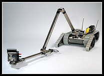
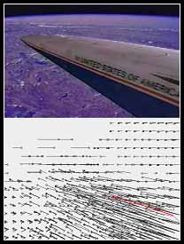
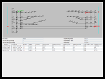
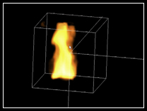
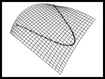
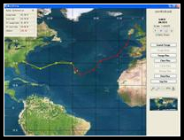

CAO Song |
||
| caosong1986@gmail.com | ||
| Bachelor of Engineering in Computer Software School of Software, Tsinghua University, July 2008, Beijing, China |
||
| Blog Curriculum Vitae |
||
Research Interests
Since graduation in July 2008, I've been a research intern in the State Key Laboratory of Intelligent Technology and Systems. My current research mainly involves 3 aspects:
1. Visual locating and tracking of object for a mobile robot.
2. Optimization of aircraft scheduling and path planning with conflict detection and resolution in real airport situations.
3. Content-based video copy detection based on the motion trajectory extraction techniques implimented in my undergraduate thesis (see projects below).
My main research interest lies in computer vision, especially the potential applications from learning and understanding various kinds of information from raw visual data. I'm also interested in robotics and human-computer interaction, especially their intersection with computer vision.
Publications
YANG Yijun, CAO Song, YONG Junhai, ZHANG Hui, Jean-Claude PAUL, SUN Jiaguang: Approximate computation of curves on B-spline surfaces. Computer-Aided Design, Volume 40, Issue 2, February 2008, Pages 223-234. [URL] [PDF]
CAO Song, HU Xiangping: A Delphi Program for Calculating Physical Properties and Designing Prescriptions for Chalcogenide glasses, Optics & Optoelectronic Technology, Vol.5, No.4, 2007. [URL] [PDF]
FANG Cunhao, CAO Song: A Practical Agent-Based Approach for Pattern Layout Design, Computer Aided Systems Theory – EUROCAST 2007, Springer LNCS, Volume 4739/2007, Pages 1223-1228. [URL] [PDF]
FANG Cunhao, ZHANG Yaoxue, CAO Song: A Resources Virtualization Approach Supporting Uniform Access to Heterogeneous Grid Resources, Computer Aided Systems Theory – EUROCAST 2007, Springer LNCS, Volume 4739/2007, Pages 481-487. [URL] [PDF]
Projects
|  | Visual Locating and Tracking of Objects for a Mobile Robot Object tracking and locating techniques in computer vision research are used to obtain real-time position and movement of objects from the visual data input of a mobile service robot, which utilizes such information in the control system of its own. |
|  | Multiple Motion Trajectory-Based Video Retrieval (Thesis) [Video(*.avi, 2.1 MB)] A video retrieval system is built which extracts motion vectors from MPEG-1 video bit-stream and connects them to form motion trajectories. Then an improved reduction algorithm is proposed and utilized to obtain the most representative trajectories, which are then stored in database. When processing the query, the system uses a coarse-to-fine comparison strategy to reduce time cost. 2 types of query input are processed: Query by Example (QBE) and Query by Sketch (QBS). At last, all the algorithms are implemented and tested, and the result indicates the proposed reduction algorithm indeed excels the existing one and the system’s performance is satisfactory. |
|  | Real-time Aircraft Scheduling and Path Planning The efficient scheduling of airport runways is an important part of surface operations planning, with the goal of increasing the throughput of airports. The challenge mainly lies in optimizing different objective functions, while satisfying a variety of real world constraints. We implemented an aircraft scheduling and path planning simulation system utilizing several state-of-the-art algorithms to generate optimized aircraft schedule and path with conflict detection and resolution in real airport situations. |
|  | Physically Based 3D Fire Simulation [Video1(*.avi, 948 KB)] [Video2(*.avi, 23 MB)] 3D Fire is simulated based on physical model, specifically the Navier-Stokes Equations. The system provides a simulation environment in which user can simulate 3D fire, manipulate simulation data and change observation view. |
|  | Approximate Computation of Curves on B-spline Surfaces [PDF] Curves on surfaces play an important role in computer aided geometric design. Due to the considerably high degree of exact curves on surfaces, approximation algorithms are preferred in CAD systems. We present an algorithm to approximate the exact curve with a reasonably low degree curve which also lies completely on the B-spline surface. The Hausdorff distance between the approximate curve and the exact curve is controlled under the user-specified distance tolerance. |
|  | Electronic Chart Display and Information System Electronic Chart Display and Information System (ECDIS) provides an alternative and more automated way of making routing plans in sailing. It enables user to observe current position of the ship, calculate distances on the map & controls the voyage plan, with authorization management of several types of users. |